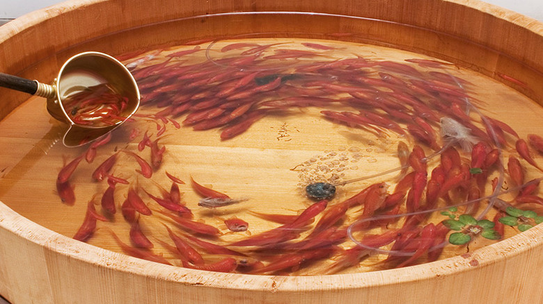

idea

深堀隆介
http://goldfishing.info/works/resins.html-どんな人
金魚をモチーフとした作品を作り続けている金魚アーティストです。
-解説
桶に入った金魚をすくう瞬間を再現した作品です。アクリル樹脂を固めて、そのうえに絵の具を置き、それを何回も繰り返すことで、金魚を立体的に描いています。 youtubeに実際につくっている様子の動画がありました https://youtu.be/-5QukoVgawg
-好きなところ
金魚の動感が出ていて好きです。夏の情景を切り取った感じが出ていて、風情を感じます。アクリル樹脂の活用方法も独自の発想で、面白いと思いました。